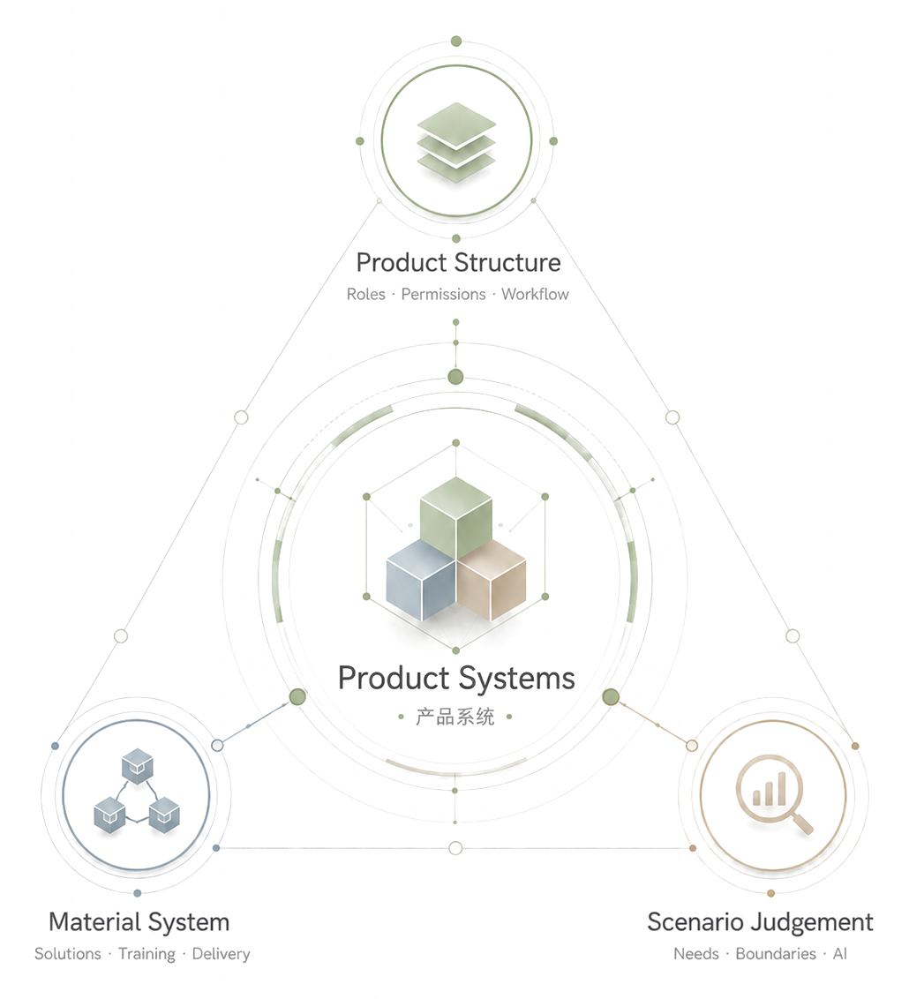
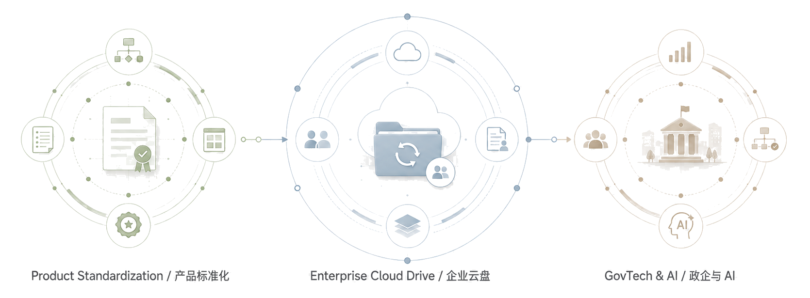
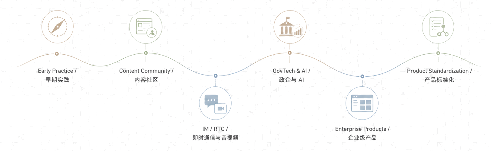
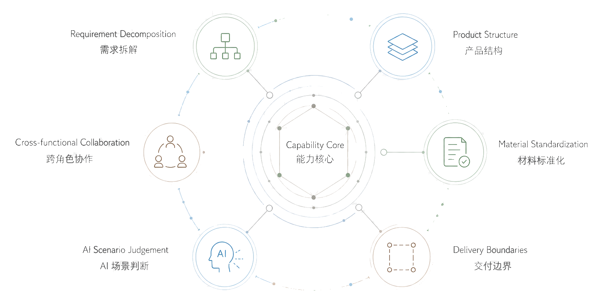
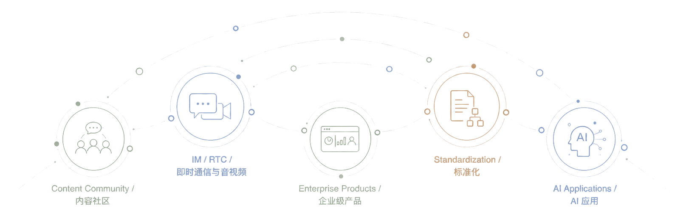
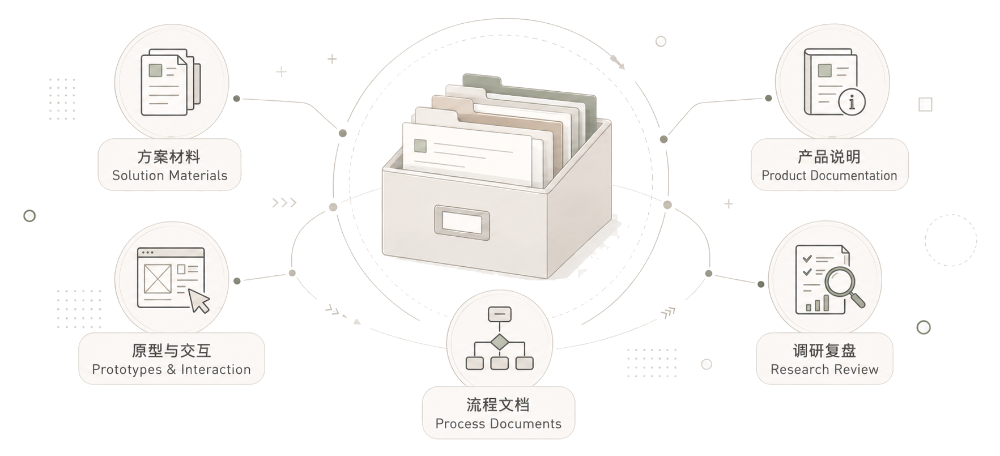

产品结构
梳理组织、角色、权限、流程和后台管理关系。
企业级产品经理 / AI 应用产品经理
长期围绕企业协同、云盘、IM / RTC、权限体系与政企数字化场景开展产品工作，关注复杂业务中的需求拆解、角色权限、流程边界、版本发布和材料沉淀。
近阶段重点参与产品标准化、销售 / 服务工具材料、政企方案支持与 AI 应用场景判断，偏向在不确定需求、交付约束和跨团队协作之间建立清晰的产品口径。

梳理组织、角色、权限、流程和后台管理关系。
沉淀销售材料、服务文档、培训资料和发布口径。
在客户需求、产品能力、风险约束和交付边界之间做取舍。
企业级产品、标准化建设、政企方案和 AI 应用判断相关的项目，呈现从问题拆解到材料沉淀的工作方式。

记录从单点功能、社区产品到企业协同、标准化体系和 AI 方案判断的积累过程，重点呈现复杂场景下的产品拆解与落地能力。

长期处理角色、权限、流程、材料、协作和交付边界共同构成的复杂产品问题。

经历从内容社区、开发者产品延伸到企业级产品，近阶段重点在产品标准化、政企方案和 AI 应用判断方面。

材料重点呈现问题拆解、结构表达、判断口径和协作方式等内容。

早期项目主要用于训练场景观察、路径设计、原型表达和反馈验证，记录从问题发现到方案验证的产品练习痕迹。

欢迎交流企业级产品、产品标准化、政企方案、AI 应用落地与复杂业务产品化相关话题。